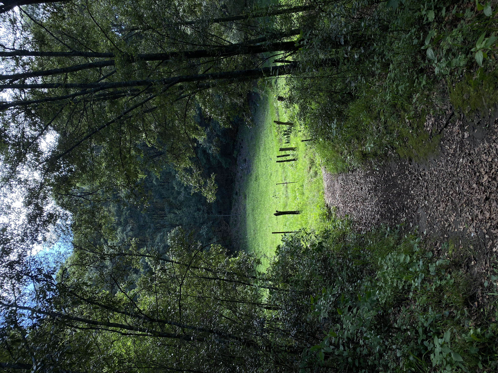
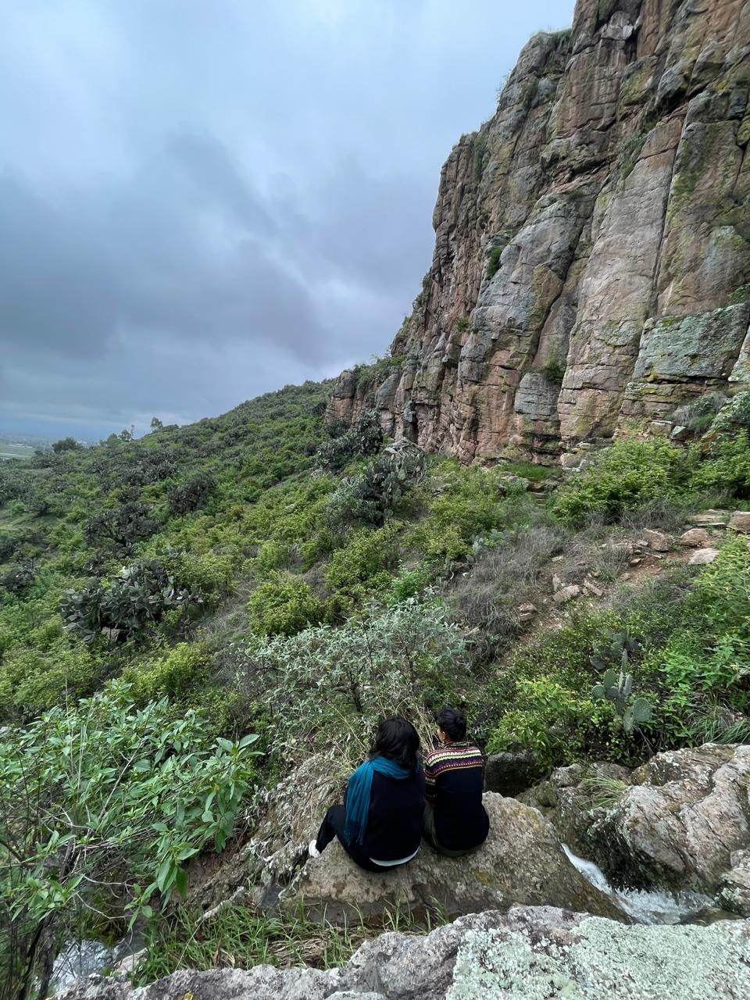
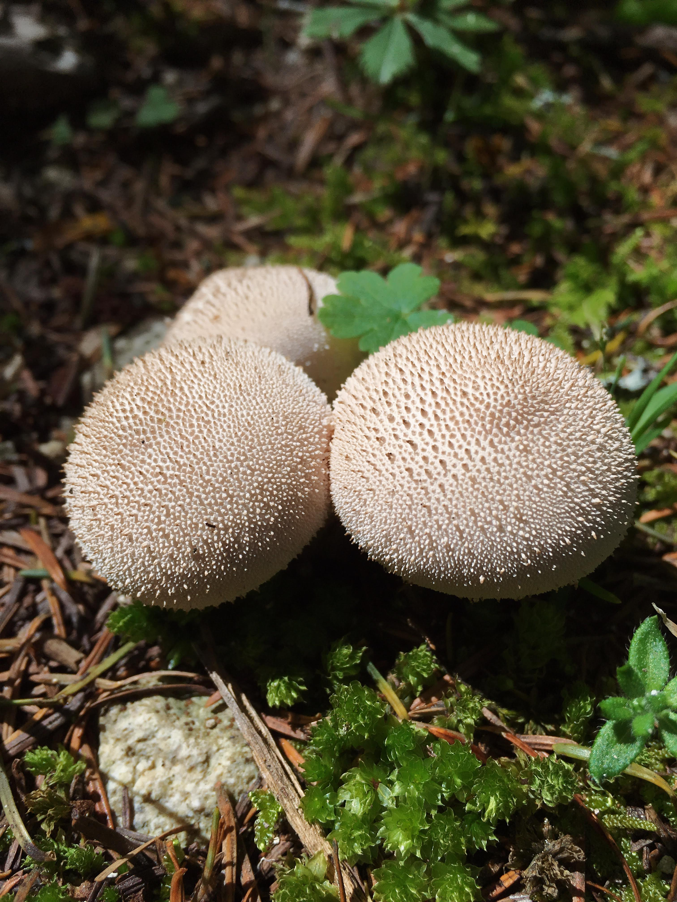
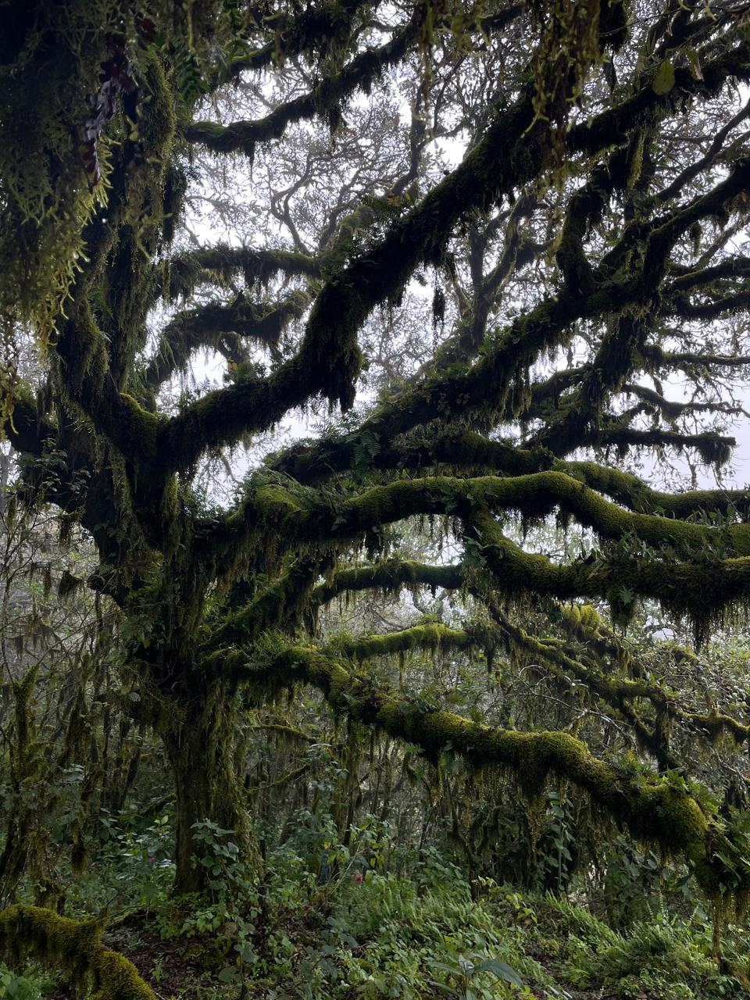
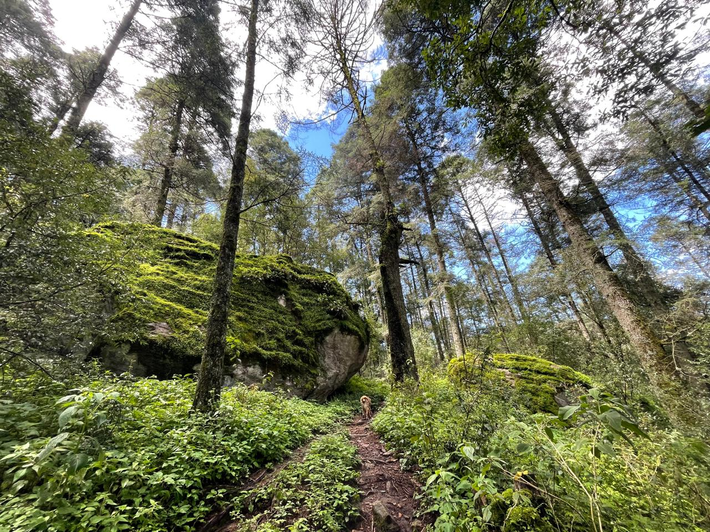
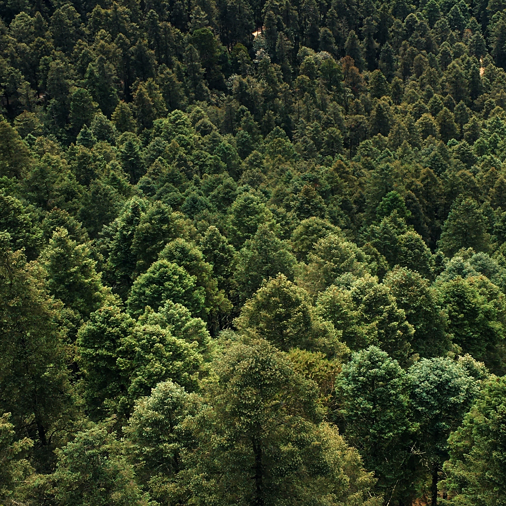
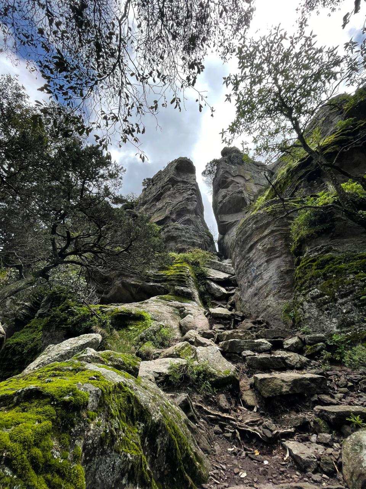
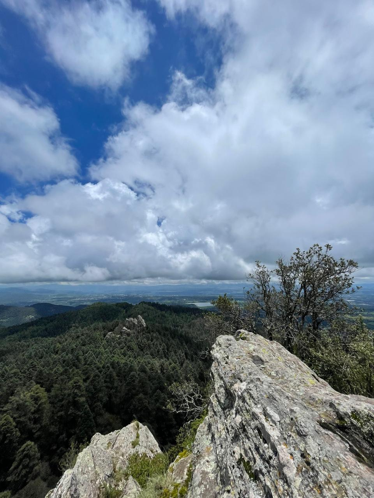
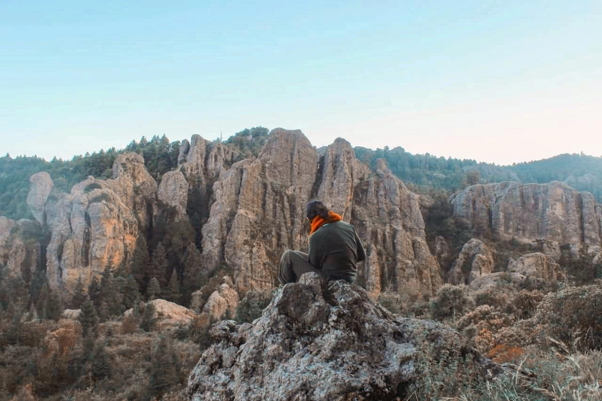
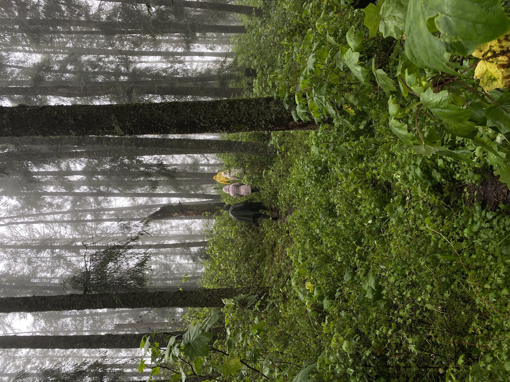

El territorio en imágenes
Lo que verás






Expediciones guiadas en los bosques y montañas de Hidalgo. Geología, biodiversidad e historia viva para familias, parejas y amigos que buscan reconectarse con la naturaleza.

Nenemi es una empresa de expediciones bioculturales en las montañas de Hidalgo. Combinamos senderismo guiado, interpretación ambiental, geología, historia regional y bienestar en una experiencia diseñada para desconectar del ritmo urbano.
Cada ruta tiene un guía especializado que convierte el paisaje en un laboratorio vivo: las rocas cuentan millones de años, el bosque revela sus mecanismos, el agua narra su origen.
"No necesitas experiencia previa. Solo ganas de caminar, respirar y descubrir."

Una inmersión profunda en los bosques templados que actúan como los pulmones de la región. Descubrirás la mecánica oculta del agua, cómo los árboles capturan la niebla y la biodiversidad que mantiene el equilibrio de la vida.

Al ascender a 2,770 metros, la atmósfera cambia. La roca gigante y el bosque de oyamel te envuelven en un silencio terapéutico. Geología viva, formaciones rocosas de millones de años y vistas panorámicas que resetean la mente.

Más que una caminata, un viaje al patrimonio biocultural de la región. Descubrirás cómo las comunidades han vivido en armonía con la montaña durante generaciones. El paisaje como archivo histórico.

Una experiencia diseñada para la contemplación profunda. La niebla abraza el bosque y el tiempo se detiene. Camina con calma, respira el aire puro y observa cómo la luz juega entre los árboles centenarios.
Cada niño que viene a NENEMI se convierte en naturalista por un día. Le entregamos un kit diseñado para observar, descubrir y registrar lo que el bosque tiene para mostrarle.





Nuestras expediciones parten desde puntos acordados previamente. El acceso a las rutas se hace en vehículo propio o coordinado con el grupo. El punto exacto de encuentro se comparte al confirmar tu reserva.
¿Tienes dudas de cómo llegar? Escríbenos por WhatsApp y te orientamos con todo el detalle logístico.
Reserva tu expedición hoy. Grupos desde 2 personas. Sin experiencia previa necesaria. Solo ganas de caminar y descubrir.